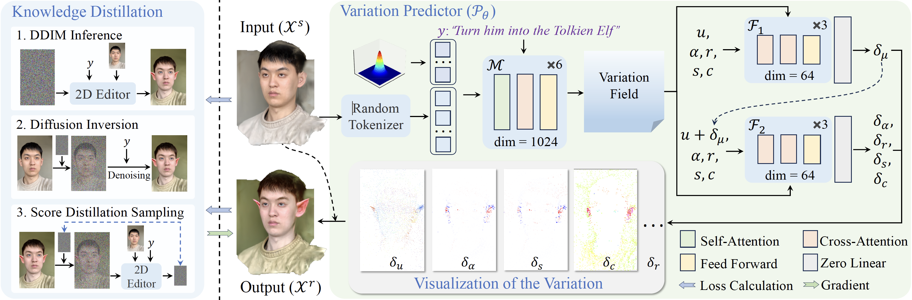

Indirect editing methods for 3D Gaussian Splatting (3DGS) have recently witnessed significant advancements. These approaches operate by first applying edits in the rendered 2D space and subsequently projecting the modifications back into 3D. However, this paradigm inevitably introduces cross-view inconsistencies and constrains both the flexibility and efficiency of the editing process. To address these challenges, we present VF-Editor, which enables native editing of Gaussian primitives by predicting attribute variations in a feedforward manner. To accurately and efficiently estimate these variations, we design a novel variation predictor distilled from 2D editing knowledge. The predictor encodes the input to generate a variation field and employs two learnable, parallel decoding functions to iteratively infer attribute changes for each 3D Gaussian. Thanks to its unified design, VF-Editor can seamlessly distill editing knowledge from diverse 2D editors and strategies into a single predictor, allowing for flexible and effective knowledge transfer into the 3D domain. Extensive experiments on both public and private datasets reveal the inherent limitations of indirect editing pipelines and validate the effectiveness and flexibility of our approach.
Variation-aware Flexible 3D Gaussian Editing
Zhejiang University
ICLR 2026
Demo Video
Abstract

Figure1. VF-Editor is a native editing method for 3D Gaussian Splatting across multiple scenes and instructions.
Method

Figure2. Pipeline
VF-Editor performs native 3D Gaussian editing by predicting explicit attribute variations instead of relying on multi-view 2D reconstruction.
- Core idea: Reformulate 3D editing as a feed-forward variation prediction problem, enabling consistent and flexible edits directly in 3D Gaussian space.
- Variation Field Generator: Encodes the input 3D Gaussians and text instruction into a unified latent variation field using transformer-based cross-attention.
- Parallel Iterative Decoding: Efficiently decodes per-Gaussian changes in position, scale, opacity, color, and rotation, allowing fine-grained and real-time editing.
- Knowledge Distillation: Trains the predictor by distilling diverse 2D editing priors (diffusion-based editors) into 3D through rendered supervision.
Citation
@inproceedings{VF-Editor,
title = {Variation-aware Flexible 3D Gaussian Editing},
author = {Hao Qin, Yukai Sun, Meng Wang, Ming Kong, Mengxu Lu, Qiang Zhu},
booktitle = {arxiv},
year = {2026}
}